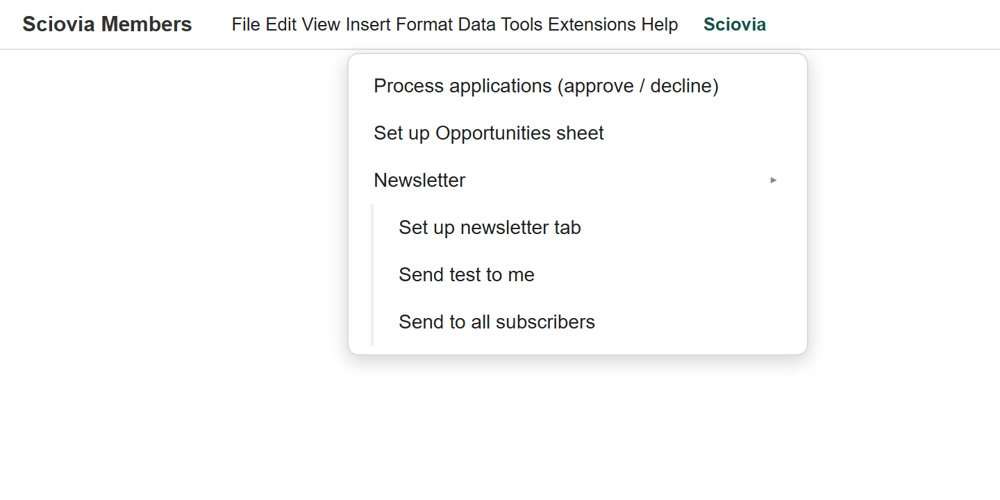
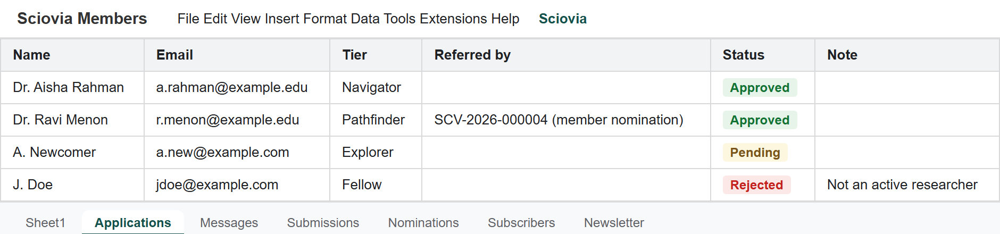
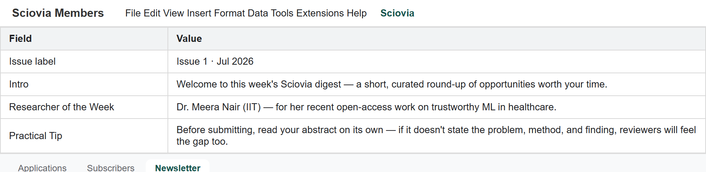

For the Sciovia team
Everything the managing committee needs to run Sciovia day to day: approving members, replying to people, handling submissions and nominations, and sending the newsletter. No technical knowledge needed — it's all done in one Google Sheet.
Almost everything you do happens in a single Google Sheet called “Sciovia Members.” It has a special Sciovia menu at the top and these tabs at the bottom:
| Tab | What it holds |
|---|---|
| Applications | People applying for membership — you approve or decline here. |
| Messages | Messages sent through the website's contact form. |
| Submissions | Opportunities the public submitted via "List an event." |
| Nominations | Award nominations sent by members. |
| Subscribers | People who signed up for the weekly newsletter. |
| Newsletter | Where you write each issue's intro and tips. |

Your actions all live in the Sciovia menu at the top of the sheet.
Jump to:
Your main recurring task. Open the Applications tab.

The Applications tab — set each row's Status to Approved or Rejected, then run the menu.
Each row has the person's name, email, requested tier, field, and a profile link. Check they're a genuine researcher.
If this column shows a member's Sciovia ID (or says "member nomination"), a current member has vouched for them — you can fast-track and approve with a light check.
Type Approved to accept — or Rejected to decline (and, if you like, write a short reason in the Note column).
Menu: Sciovia → Process applications (approve / decline).
Open the Messages tab.
Every contact-form message is saved here and emailed to teamsciovia@gmail.com. To reply, just answer the email in your inbox as normal — the person's address is on it. Nothing else to do.
Open the Submissions tab.
Open the Nominations tab.
Members submit award nominations through the website (they must give their membership number). Each nomination lists the award, the nominee, the reason, and who nominated them. The awards panel reviews these on merit when each award cycle comes around.
People who subscribed are in the Subscribers tab. To send them a digest:

The Newsletter tab — you fill the Intro, Researcher, and Tip; the opportunities are added automatically.
Email hello@sciovia.org, or check the technical setup notes in the project's backend/SETUP.md. If a menu item doesn't appear, reload the sheet (F5) — the Sciovia menu builds itself each time the sheet opens.